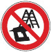

Eintreibgeräte |

Eintreibgeräte betrieben mit Druckluft
Eintreibgeräte betrieben mit Gaskartuschen oder Akku
Eintreibgeräte betrieben mit Gaskartuschen
| Art der Auslösesicherung | Verbotskennzeichen |
| Dauerauslösung mit Auslösesicherung | Ja |
| Kontaktauslösung** | Ja |
| Umschaltbar* am Eintreibgerät** | Ja |
| Einzelauslösung mit Auslösesicherung** | Nein |
| Einzelauslösung mit Sicherungsfolge** | Nein |
| * Als umschaltbare Eintreibgeräte gelten diese, die durch einen Schalter am Eintreibgerät die Einstellmöglichkeit besitzen, das Gerät mit „Kontaktauslösung“ oder mit „Einzelauslösung mit Sicherungsfolge/Einzelauslösung mit Auslösesicherung“ zu bedienen.
** Identische Eintreibgeräte werden bei Nagellängen bis 100 mm mit unterschiedlichen Auslösesicherungen am Markt angeboten! Eine Verbotskennzeichnungspflicht besteht ausschließlich für gas- bzw. druckluftbetriebene Eintreibgeräte. |
|
Eintreibgeräte betrieben mit Akku
| Einzelauslösung mit Sicherungsfolge | |
| Erster „Schuss“: 1) Auslösesicherung aufsetzen 2) Auslöser drücken |
weitere „Schüsse“: Immer 1) dann 2) |
| Einzelauslösung mit Auslösesicherung | |
| Erster „Schuss“: 1) Auslösesicherung aufsetzen 2) Auslöser drücken |
weitere „Schüsse“: Die Auslösesicherung kann betätigt bleiben, der Auslöser muss immer neu betätigt werden. |
| Kontaktauslösung – für „Baustellenbereiche“ nicht zulässig! | |
| Erster „Schuss“: 1) Auslösesicherung aufsetzen 2) Auslöser drücken Umgekehrte Reihenfolge möglich. |
weitere „Schüsse“: Es braucht nur einer der beiden erneut betätigt zu werden. |
| Wahlweise Auslösung – für „Baustellenbereiche“ nicht zulässig! | |
| Umschaltbarer Auslösemodus auf „Einzelauslösung mit Sicherungsfolge“ oder „Kontaktauslösung“ | |
| Befestigungen bei der Montage auf Stahl- oder Betonuntergründen | |||
| 1. Für die nachstehend aufgeführten Werkstoffe sind folgende Mindestabstände zu freien Kanten einzuhalten | |||
| Werkstoff/Geräteart | Mauerwerk | Beton/Stahlbeton | Stahl |
| Eintreibgeräte | 5 cm | 5 cm | 3-facher Nagelschaftdurchmesser |
| 2. Für die nachstehend aufgeführten Werkstoffe sind folgende Mindestabstände der Nagelsetzbolzen untereinander einzuhalten | |||
| Werkstoff/Geräteart | Mauerwerk | Beton/Stahlbeton | Stahl |
| Eintreibgeräte | 10-facher Nagelschaftdurchmesser | 10-facher Nagelschaftdurchmesser | 5-facher Nagelschaftdurchmesser |
|
|||
07/2019